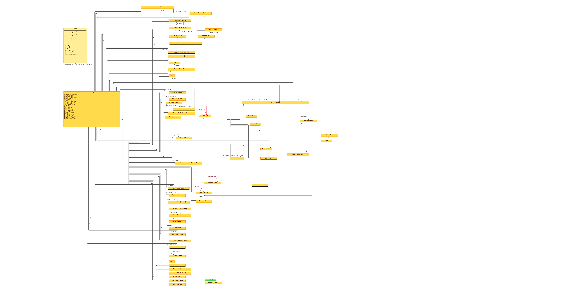

The Metaverse Ontology is a formal knowledge representation that classifies the entities, relationships, and properties constituting a metaverse ecosystem—including agents, scenes, digital assets, economies, governance structures, and communication protocols. It provides a shared semantic vocabulary enabling interoperability between platforms, AI systems, and toolchains operating within or around persistent immersive environments.
Semantic Classification
Content
Existing state of the Art
Rationale
Methodology
- This ontology was the product of two days of exploratory interaction with Constitutional AI Language Model Family, Google Gemini Multimodal Language Model Advance 1.5, and Instruction-Following Conversational AI System 4.
- It was unexpectedly successful, resulting in what seems to be an internally consistent knowledge graph in an Web Ontology Language compliant ontology for the design represented throughout this wider Logseq Knowledge Graphing.
-
Although the established OWL can richly describe our ontology, it’s a little too arcane. Nonetheless the full text can be seen where with the diagram.
- OWL based Ontology

-
For ease of comprehension I attempted to convert the OWL schema to JSON-LD. This attempt did achieve a result, but it proved difficult to visualise.
-
Many of the JSON-LD tools online are now unmaintained, making it hard to visually check the output of the Large Language Models.
-
Because of this the decision was made to switch to Linked-JSON, which is a simpler and less expressive subset of JSON-LD. Linked-JSON focusses on
@idlinking. It sacrifices some features provided by JSON-LD 1.1’s context definitions, typing, and alignment with RDF concepts.- Scope and Complexity of Linked-JSON vs JSON-LD
- Linked-JSON: lightweight subset focused on linking data using
@id - Lack of standardized context definitions for vocabularies and IRI mappings
- No explicit typing mechanism like
@type - Limited to absolute IRIs, no compact IRIs or relative IRIs
- Unclear semantics for blank node identifiers
- No standardized representation of indexed values, lists, and named graphs
- Inability to reshape data structure using framing
- Reduced interoperability with RDF and Linked Data ecosystem
- Linked-JSON: lightweight subset focused on linking data using
- Scope and Complexity of Linked-JSON vs JSON-LD
-
LINKED JSON
- Finally the, to improve on the OWL by simplifying it, this is a version using Linked-JSON (by Melvin Carvalho). Some details are lost.
- Linked-JSON version of the OWL ontology
-
Mermaid version stripped back to Linked-JSON expressiveness
classDiagram class MetaverseEntity { rdfs:label "Metaverse Entity" rdfs:comment "The root type encompassing all entities within the metaverse." } class MetaverseAgent { rdfs:label "Metaverse Agent" rdfs:comment "Represents any agent within the metaverse, including human users and AI entities." participatesIn MetaverseScene hasSkillProfile SkillProfile hasPrivacySetting PrivacySetting hasReputationScore ReputationScore hasWallet DigitalWallet createsVariations SceneObject hasInteractionPreference InteractionPreference } class DigitalWallet { rdfs:label "Digital Wallet" rdfs:comment "Represents the agent's wallet for managing digital assets and currencies." } class AIAgent { rdfs:label "AI Agent" rdfs:comment "Represents AI entities with varying levels of autonomy and capabilities." decayFunction xsd:string } class HumanAgent { rdfs:label "Human Agent" rdfs:comment "Represents human users within the metaverse." } class MetaverseScene { rdfs:label "Metaverse Scene" rdfs:comment "Represents a specific environment or space within the metaverse." governedBy GovernanceStructure hasPolicy MetaversePolicy } class DigitalAsset { rdfs:label "Digital Asset" rdfs:comment "Represents unique digital goods and assets within the metaverse." hasOwner MetaverseAgent } class VirtualEconomy { rdfs:label "Virtual Economy" rdfs:comment "Represents the economic system within the metaverse." regulatedBy EconomicPolicy hasMarketplace Marketplace } class Marketplace { rdfs:label "Marketplace" rdfs:comment "Represents platforms or locations where digital assets are traded." } class GovernanceStructure { rdfs:label "Governance Structure" rdfs:comment "Represents the governance models and structures within the metaverse." } class MetaversePolicy { rdfs:label "Metaverse Policy" rdfs:comment "Represents policies governing behavior and interactions within the metaverse." } class EconomicPolicy { rdfs:label "Economic Policy" rdfs:comment "Represents the rules and regulations governing the virtual economy." } class NostrEvent { rdfs:label "Nostr Event" rdfs:comment "Represents an event published on the Nostr network." } class NostrTag { rdfs:label "Nostr Tag" rdfs:comment "Represents a tag associated with a NostrEvent, providing context and metadata." } class SceneObject { rdfs:label "Scene Object" rdfs:comment "Represents interactive objects within a Metaverse Scene. Agents can create variations of these objects within the USD file format." } class InteractionPreference { rdfs:label "Interaction Preference" rdfs:comment "Represents the personal conduct requirements or preferences for interactions within the metaverse." } MetaverseEntity <|-- MetaverseAgent MetaverseEntity <|-- MetaverseScene MetaverseEntity <|-- DigitalAsset MetaverseEntity <|-- VirtualEconomy MetaverseEntity <|-- Marketplace MetaverseEntity <|-- GovernanceStructure MetaverseEntity <|-- NostrEvent MetaverseEntity <|-- NostrTag MetaverseEntity <|-- SceneObject MetaverseAgent <|-- AIAgent MetaverseAgent <|-- HumanAgent MetaverseAgent "1" *-- "0..*" SkillProfile : hasSkillProfile MetaverseAgent "1" *-- "0..*" PrivacySetting : hasPrivacySetting MetaverseAgent "1" *-- "0..*" ReputationScore : hasReputationScore MetaverseAgent "1" *-- "0..*" DigitalWallet : hasWallet MetaverseAgent "1" *-- "*" SceneObject : createsVariations MetaverseAgent "1" *-- "1" InteractionPreference : hasInteractionPreference MetaverseScene "1" *-- "0..*" GovernanceStructure : governedBy MetaverseScene "1" *-- "0..*" MetaversePolicy : hasPolicy DigitalAsset "1" *-- "1" MetaverseAgent : hasOwner VirtualEconomy "1" *-- "0..*" EconomicPolicy : regulatedBy VirtualEconomy "1" *-- "0..*" Marketplace : hasMarketplace
-
- Linked-JSON version of the OWL ontology
Design formalisation
- Here’s the updated text to align with the Linked-JSON ontology:
-
- Fusing of digital and real life: The ontology accommodates the blending of digital and real-life experiences through the
MetaverseSceneclass, which can have ahasPhysicalCounterpartproperty linking it to a real-world location (schema:Place). This allows for the representation of mixed reality environments where virtual scenes are anchored to physical spaces.
- Fusing of digital and real life: The ontology accommodates the blending of digital and real-life experiences through the
-
- Social first: The
MetaverseAgentclass, with its subclassesHumanAgentandAIAgent, forms the foundation for social interactions within the metaverse. TheSocialRelationshipclass, a subclass offoaf:Relationship, captures the connections and interactions among agents, enabling the formation of social networks and communities.
- Social first: The
-
- Real-time interactive 3D graphics: The
MetaverseSceneclass represents the 3D environments within the metaverse, while theSceneObjectclass represents the interactive objects within those scenes. ThePhysicalPropertiesclass captures the visual and spatial characteristics of objects, such as texture and mass, contributing to the realism and interactivity of the 3D graphics.
- Real-time interactive 3D graphics: The
-
- Persistent: The ontology supports persistence through the
MetaverseEntityclass, which serves as the base class for all entities within the metaverse. By assigning unique identifiers as 64 byte strings from BIP85 nostr and similar derivation path, (e.g.,@id) to instances ofMetaverseEntityand its subclasses, the ontology enables the persistence and continuity of objects, agents, and scenes across sessions and platforms.
- Persistent: The ontology supports persistence through the
-
- Supports ownership: The
DigitalAssetclass represents unique digital goods and assets within the metaverse. ThehasOwnerproperty, which linksDigitalAssettoMetaverseAgent, establishes the ownership relationship. ThehasCreatorproperty can be used to attribute the creation of digital assets to specific agents.
- Supports ownership: The
-
- Supports user-generated content: The ontology supports user-generated content through the
SceneObjectandDigitalAssetclasses. Agents (MetaverseAgent) can create and manipulate instances of these classes, contributing to the dynamic and participatory nature of the metaverse.
- Supports user-generated content: The ontology supports user-generated content through the
-
- Open and extensible: The ontology is designed to be open and extensible, utilizing established ontologies like Schema.org and FOAF, and allowing for the integration of additional domain-specific ontologies as needed. The modular structure of the ontology, with its hierarchical class relationships and well-defined properties, facilitates the extension and customization of the metaverse model.
-
- Low-friction economic actors and actions: The
VirtualEconomyclass represents the economic system within the metaverse, encompassing trade, ownership, and currency exchange. TheMarketplaceclass facilitates the listing and transaction of digital assets and services. TheTradeActionclass from Schema.org can be used to capture economic transactions between agents.
- Low-friction economic actors and actions: The
-
- Trusted and secure: The ontology incorporates trust and security mechanisms through classes like
PrivacySetting, which represents an agent’s privacy preferences, andAccessControlListfrom Schema.org, which can be used to define access rights and permissions for metaverse entities. TheReputationScoreclass provides a means to assess an agent’s trustworthiness based on their interactions and behavior within the metaverse.
- Trusted and secure: The ontology incorporates trust and security mechanisms through classes like
-
- Convergence of film and games: The ontology supports the convergence of film and games through the
MetaverseSceneandMetaverseEventclasses. Scenes can represent immersive, cinematic environments, while events can encompass interactive gameplay sessions or narrative-driven experiences. TheMetaverseAgentclass allows for the participation of both human users and AI-controlled characters, blurring the line between film and game experiences.
- Convergence of film and games: The ontology supports the convergence of film and games through the
-
- Blurring of IP boundaries and narrative flow: The
Varsetclass introduces the concept of variations or alternate versions of metaverse scenes and objects, enabling the creation of branching narratives and remixing of intellectual property. TheInteractionEventclass captures the interactions between agents and objects, allowing for dynamic and emergent storytelling that blurs traditional narrative boundaries.
- Blurring of IP boundaries and narrative flow: The
-
- Multimodal and hardware-agnostic: The ontology is designed to be multimodal and hardware-agnostic, focusing on the fundamental concepts and relationships within the metaverse rather than specific hardware implementations. Classes like
MetaverseAgentandMetaverseScenecan be instantiated across different platforms and devices, ensuring a consistent metaverse experience regardless of the hardware used.
- Multimodal and hardware-agnostic: The ontology is designed to be multimodal and hardware-agnostic, focusing on the fundamental concepts and relationships within the metaverse rather than specific hardware implementations. Classes like
-
- Mobile-first experiences: While the ontology itself is hardware-agnostic, it can be easily extended to incorporate mobile-specific considerations. For example, the
MetaverseSceneclass could include properties likeisMobileOptimizedto indicate scenes that are designed for mobile devices, ensuring a seamless mobile-first experience.
- Mobile-first experiences: While the ontology itself is hardware-agnostic, it can be easily extended to incorporate mobile-specific considerations. For example, the
-
- Safeguarding and governance: The ontology addresses safeguarding and governance through classes like
MetaversePolicy, which represents the rules and regulations governing behavior and interactions within the metaverse. TheGovernanceStructureclass captures the decision-making processes and enforcement mechanisms that ensure the safety and well-being of metaverse participants.
- Safeguarding and governance: The ontology addresses safeguarding and governance through classes like
-
- Scaffolded by GenAI: The integration of GenAI (Generative AI) within the metaverse is supported through the
AIAgentclass and its associated properties, such ashasLearningModelandhasTrainingData. These properties allow for the representation of AI agents with varying levels of autonomy and adaptability, capable of generating content, providing assistance, and engaging in dynamic interactions with human users.
- Scaffolded by GenAI: The integration of GenAI (Generative AI) within the metaverse is supported through the
-
- Supports Agentic AI actors: The
AIAgentclass, along with its subclasses and properties, enables the creation of agentic AI actors within the metaverse. TheAgentArchetypeclass defines different roles and behaviors for AI agents, while properties likehasAgentArchetypeandhasEmotionalStateimbue them with personality and emotional intelligence. TheparticipatesInproperty allows AI agents to actively engage in metaverse scenes and events alongside human users.
- Supports Agentic AI actors: The
-
- Digital Asset and Ownership: The
DigitalAssetclass represents unique digital goods and assets within the metaverse. It includes properties likegenesis(Bitcoin transaction ID where the asset was created),issuanceleveraging RGB and Client Side Validation ),type(specifies the type of asset),currentOwner(links to the current owner agent), andownershipHistory(represents the chain of ownership transfers). TheOwnershipTransferclass represents the transfer of ownership of aDigitalAssetbetween agents, capturing details such as thefromagent (transferring ownership),toagent (receiving ownership),timestamp, andtransactionId(associated Bitcoin/Lightning Network transaction ID).
- Digital Asset and Ownership: The
-
- Bitcoin Proof-of-Work Protocol and Lightning and Similar L2 Network Integration: The
MetaverseAgentclass includes properties likebitcoinWallet(Bitcoin address associated with the agent) andlightningNode(public key of the agent’s Lightning Network node) to enable Bitcoin and Lightning Network integration. TheVirtualEconomyclass includes properties likebitcoinNetworkandlightningNetworkto represent the underlying Bitcoin and Lightning Network infrastructure on which the economy operates. Fiat money can run on Cashu.
- Bitcoin Proof-of-Work Protocol and Lightning and Similar L2 Network Integration: The
-
- Nostr Integration: The
NostrEventclass represents an event published on the Nostr network, with properties likerelayUrl(URL of the Nostr relay where the event was published),kind(type or category of the event),content(content of the message or event data), andtags(list of associatedNostrTaginstances). TheNostrTagclass represents a tag associated with aNostrEvent, providing context and metadata through properties liketype(type of tag) andvalue(value of the tag).
- Nostr Integration: The
-
- PKI and Wallets: The
MetaverseEntityclass includes properties likepublicKeyandprivateKeyto support public key infrastructure (PKI) for entity identification and authentication. TheMetaverseAgentclass includes awalletproperty that links to aschema:DigitalWalletinstance, representing the agent’s digital wallet for managing various assets.
- PKI and Wallets: The
-
- All objects and agents and artifacts are nostr PKI pairs. BIP32 is used to derive the path m/44’/1237’/ (according to the Nostr entry on SLIP44). In this way all objects are globally and hierarchically referenceable.
- It is possible at this stage to put more flesh on the bones through example software stack choices. Such specificity likely introduces overlaps, technical challenges, and contradictions, but has been generated in the main by GenAI based on the wider corpus of text and demonstrates the direction of travel well.
- NostrEvent:
- Properties:
relayUrl: (xsd:anyURI) The URL of the Nostr relay where the event was published.kind: (xsd:string) The type or category of the event (e.g., “set_metadata”, “text_note”, “reaction”, “channel_creation”, “key_rotation”).content: (xsd:string) The content of the message or event data.tags: (linkedjson:ObjectProperty,range:metaverse:NostrTag) A list of tags associated with the event.
- Properties:
- NostrTag:
@type:linkedjson:Classrdfs:label: “Nostr Tag”rdfs:comment: “Represents a tag associated with a NostrEvent, providing context and metadata.”- Properties:
type: (xsd:string) The type of tag (e.g., “p”, “e”, “t”).value: (xsd:string) The value of the tag.
- Using the RGB protocol for the instantiation and transfer of objects in your metaverse ontology offers a decentralized, scalable, and flexible mechanism compared to the Nostr protocol. Here’s how objects might be managed under RGB and Client Side Validation without needing frequent chain commits:
- Object Creation:
- Each digital object or asset is instantiated as an
RGBAssetclass instance within the metaverse. This includes assigning a uniqueContractIdandSchemaIdwhich are crucial for defining the asset’s properties and the rules governing its behavior according to the RGB protocol. - An initial state of the asset is defined using
Assignmentsto bind certain rights or properties to the asset, such as ownership or usage rights. This state is embedded within the asset’s genesis transaction but doesn’t require immediate blockchain commitment.
- Each digital object or asset is instantiated as an
- Asset Registration:
- Upon creation, the asset’s initial state is recorded in a genesis block of the RGB schema. However, instead of committing this to the blockchain directly, the state can be stored off-chain (e.g., in a secure distributed file system or a database) to enhance privacy and reduce transaction costs.
- Defining Transfer Operations:
- Transfers of assets are managed through
RGBContractOperation, which includesInputs(references to previous states),Outputs(new states or changes), and possiblyRedeems(specific rights being exercised). - The transfer operation details how the asset’s ownership or other properties change, using
Seal Definitionsto lock and unlock access to the asset.
- Transfers of assets are managed through
- Executing Transfers:
- To execute a transfer, the new state created by the transfer operation is prepared, detailing how rights and responsibilities are reassigned from one party to another. This often involves updating the
Owned Stateto reflect new ownership. - Instead of committing each transaction to the blockchain, the RGB protocol allows for state transitions to be confirmed off-chain until a significant event requires blockchain validation. This approach saves on transaction fees and minimizes public ledger exposure.
- To execute a transfer, the new state created by the transfer operation is prepared, detailing how rights and responsibilities are reassigned from one party to another. This often involves updating the
- State Commitments:
- When necessary, state transitions can be committed to the blockchain using minimal data footprints. This is done by embedding a cryptographic commitment to the state within a standard Bitcoin transaction, leveraging RGB’s ability to bind state to Bitcoin UTXOs through client-side validation.
- Enhanced Security: RGB’s use of cryptographic commitments and client-side validation offers robust security without exposing detailed state information on the blockchain.
- Scalability: By reducing the frequency of on-chain transactions and handling most operations off-chain, RGB can scale more efficiently, handling a higher volume of asset transfers with lower costs.
- Flexibility: RGB allows for complex state definitions and transitions, supporting a wide range of digital assets and operations within the metaverse, from simple transfers to intricate interactions involving multiple parties and rights.
- Object Creation:
- DigitalAsset:
- Properties:
genesis: (xsd:string) The Bitcoin transaction ID where the asset was created.issuance: (linkedjson:ObjectProperty,range:metaverse:RGBschema) Links to the specific RGB schema used for the asset’s issuance.type: (xsd:string) Specifies the type of asset (e.g., “collectible”, “virtual_item”, “tokenized_right”).currentOwner: (linkedjson:ObjectProperty,range:metaverse:MetaverseAgent) Links to the agent who currently owns the asset.ownershipHistory: (linkedjson:ObjectProperty,range:metaverse:OwnershipTransfer) Represents the chain of ownership transfers for the asset.
- Properties:
- OwnershipTransfer:
- Properties:
from: (linkedjson:ObjectProperty,range:metaverse:MetaverseAgent) The agent transferring ownership.to: (linkedjson:ObjectProperty,range:metaverse:MetaverseAgent) The agent receiving ownership.timestamp: (xsd:dateTime) The date and time of the transfer.transactionId: (xsd:string) The Bitcoin/Lightning Network transaction ID associated with the transfer.
- Properties:
- PKI and Wallets:
- MetaverseEntity:
- Properties:
publicKey: (xsd:string) The public key associated with the entity.privateKey: (xsd:string) The private key associated with the entity (optional, depending on security considerations).
- Properties:
- MetaverseAgent:
- Properties:
wallet: (linkedjson:ObjectProperty,range:schema:DigitalWallet) Represents the agent’s digital wallet for managing various assets.
- Properties:
- MetaverseEntity:
- Bitcoin and Lightning Network Integration:
- MetaverseAgent:
- Properties:
bitcoinWallet: (xsd:string) The Bitcoin address associated with the agent.lightningNode: (xsd:string) The public key of the agent’s Lightning Network node.
- Properties:
- VirtualEconomy:
- Properties:
bitcoinNetwork: (linkedjson:ObjectProperty,range:schema:ComputerNetwork) Represents the Bitcoin network on which the economy operates.lightningNetwork: (linkedjson:ObjectProperty,range:schema:ComputerNetwork) Represents the Lightning Network facilitating faster and cheaper transactions.
- Properties:
- Cashu Integration:
- Properties:
cashuWallet: (linkedjson:ObjectProperty,range:schema:DigitalWallet) Represents the Cashu wallet associated with the metaverse agent. This wallet manages the agent’s Chamium eCash balance.cashuNode: (xsd:string) The identifier for the Cashu federation node that the agent’s wallet is associated with, facilitating eCash transactions.
- Cashu Economy:
- Properties:
chamiumEconomy: (linkedjson:ObjectProperty,range:schema:EconomicSystem) Represents the part of the virtual economy that operates using Chamium eCash, allowing for private and instant transactions.ecashTransactions: (linkedjson:ObjectProperty,range:schema:ItemList) List of transactions executed using Chamium eCash, supporting privacy and micro-transactions within the metaverse.
- Properties:
- Transaction Privacy:
- Properties:
privacyLevel: (xsd:string) Defines the level of privacy for transactions conducted by the agent, with options including Bitcoin, Lightning, or Cashu Chamium eCash, each offering different degrees of privacy and speed.
- Properties:
- Cashu Services:
- Classes:
CashuService: Represents services within the metaverse that specifically use or provide Cashu Chamium eCash functionalities, such as eCash exchanges, payment processing, or private transactions.- Properties:
serviceType: (xsd:string) The type of service offered, such as eCash exchange, payment gateway, or privacy service.accessEndpoint: (xsd:anyURI) The URL or identifier where the service can be accessed within the metaverse.
- Properties:
- Classes:
- Properties:
- MetaverseAgent:
- NVIDIA Omniverse:
- MetaverseScene:
- Properties:
omniverseNucleusUrl: (xsd:anyURI) The URL of the Omniverse Nucleus server hosting the scene.usdFile: (xsd:anyURI) The URL or reference to the USD file defining the scene’s content.
- Properties:
- USD Variance: Define properties or subclasses within
SceneObjectto represent USD variations and the conditions under which they are activated. - Scene Schema Scaffolding: Exploring Linked-JSON structures to emulate the more expressive OWL
owl:oneOfandowl:someValuesFrom.- Linked-JSON representation for
SceneTypeandMetaverseSceneusemetaverse:minCardinalityto indicate that aMetaverseScenemust have at least oneSceneObject.
- Linked-JSON representation for
- AI Agent Capabilities: Expand the capabilities property of
AIAgentto include specific actions and functions related to Bitcoin, RGB, and Nostr, such as “create_digital_asset”, “transfer_ownership”, “publish_nostr_event”, etc. - Event Logging and Attestation: Consider adding mechanisms for logging significant events and generating cryptographic attestations, which could be used for dispute resolution or auditing purposes. This would operate on an automated threshold trigger system mediated by LLM, and would wrap the recent interactions between parties in pubkey encrypted data blobs, sending them to both parties alongside a report of the trigger event. This would potentially allow action by the parties in their jurisdictions. The data would then be deleted from the metaverse.
- MetaverseScene:
- NostrEvent:
- http://owlgred.lumii.lv/online_visualization/4qge#
- Metaverse Entity Schema Archive
-
- This more specific and expanded metaverse ontology featuring a relay based communication protocol, URIs, blockchain wallets, and NVIDIA omniverse, offers a comprehensive and extensible framework generated with the help of GenAI. It offers a glimpse of the potential for automating ontological descriptions for emergent and novel social, digital, collaborative spaces.
- By incorporating a wide range of classes, properties, and relationships, the ontology starts to enable formalisation of:
- Agents: Human users and AI entities, their attributes, skills, and relationships.
- Scenes and Objects: Virtual environments, their characteristics, and interactive elements.
- Digital Assets and Economy: Creation, ownership, and exchange of virtual goods and currencies.
- Events and Interactions: Social gatherings, communication, and collaborative activities.
- Governance and Policies: Decision-making processes, rules, and regulations within the metaverse.
- Infrastructure and Technology: Hardware, software, and networking components enabling the metaverse.
AI Agent Refactor
classDiagram 1. CORE: Agent-Oriented Ontology ----------------------------------------------------------------------- ----------------------------------------------------------------------- class WebIDEntity { rdfs:label "WebID Entity" rdfs:comment "A conceptual parent for all objects in the WebID ecosystem." } class Person { rdfs:label "Person" rdfs:comment "Represents a decentralized identity and profile using WebID." webid xsd:anyURI "A unique WebID URI identifying this individual" name xsd:string "A handle or short name (distinct from display_name)" display_name xsd:string "A more user-facing display name" about xsd:string "Short bio/about text" picture xsd:anyURI "URI of the user’s profile image" banner xsd:anyURI "URI of the user’s banner image" website xsd:anyURI "User’s personal website" } class WebIDEvent { rdfs:label "WebID Event" rdfs:comment "A generic event referencing a WebID identity, with timestamps, content, and possible signatures." authorWebID xsd:anyURI "The WebID of the event author" created_at xsd:dateTime "Timestamp of creation" content xsd:string "Event content or message" signature xsd:string "Digital signature (e.g., for verifiability)" } class WebIDService { rdfs:label "WebID Service" rdfs:comment "A decentralized or semi-decentralized service endpoint that stores or routes WebID events." serviceURI xsd:anyURI "The endpoint (e.g., HTTPS, WebSocket) providing service functionality" } 3. IMMERSIVE REAL-TIME SUBCATEGORY ----------------------------------------------------------------------- ----------------------------------------------------------------------- B. Agent Hierarchy Agent <|-- AIAgent Agent <|-- HumanAgent D. Immersive Real-Time ImmersiveRealTimeEntity <|-- ImmersiveScene ImmersiveRealTimeEntity <|-- DigitalAsset ImmersiveRealTimeEntity <|-- VirtualEconomy ImmersiveRealTimeEntity <|-- Marketplace ImmersiveRealTimeEntity <|-- GovernanceStructure ImmersiveRealTimeEntity <|-- ImmersivePolicy ImmersiveRealTimeEntity <|-- SceneObject Example of AI Agents creating scene objects (optional) AIAgent "1" *-- "*" SceneObject : canCreateVariations ImmersiveScene "1" *-- "0..*" GovernanceStructure : governedBy ImmersiveScene "1" *-- "0..*" ImmersivePolicy : hasPolicy DigitalAsset "1" *-- "1" Agent : hasOwner VirtualEconomy "1" *-- "0..*" EconomicPolicy : regulatedBy VirtualEconomy "1" *-- "0..*" Marketplace : hasMarketplace ``` ## JSON-LD and Linked-JSON choices - [Online FlowChart & Diagrams Editor - Mermaid Live Editor](https://mermaid.live/view#pako:eNqlWFFv2zYQ_iuEXgYUqdMkW9oKe8nQbMtD1mAuOmDwC02dJS4UqZGUUyHzf9-RlC1akWRl84tF-tPxu7uPx6OfE6YySNKECWrMJ05zTcuVJPjxM-QeLN2CNnArLbcNeQ4_uo_ONiYVdA2CrJIDjgTgKukBmSpLkBahXwogWilLbFMBAYm_VLgUlzmhQuAEvs_BkCduCy6JRXi5t77Y292Fr0GqN7lb6DRTj5sg-jtUGgw-G0JlQ6g3O8TqjHDJRJ05F4q6pJLUBufxrYzc3B08WsRrVVRbznhFLZg72ZFfMpDQwQpqlo9ciAetNlwAiQdHqAfNt5Q1S7DW0TgeHiHRrdpSy5VcMqWB9MZH2D8wI2DJJ55zS0UYdQCmwdH_SjX37xvi2X9e_wXMjubpyNhomloUadeclSWXFJ-l71A9wfxGaYIJobkLStbaRBZgQ3pYrTVKMM7OAOWbu2lNYZJfIaZIEl5OZEt14_gJ2IIwRG0Ira2SqmwCR1rRNRcvNZQBo83PtWQu-OSbyVJj9SHdA3786sQ57YqHvMabWPD_ect63czYsmF3zNuyxFTA-IYzjPaWayU9BvVgKspgmqv75ArnJGQ_NeQX_0glg6XVNbN1b5s8KMFZ07kTxqd2wI2T4ckN4FHzXK4l_7uGg8xzpbKg8lbwJ11GVz4_SdC9WjrqyFeubU3FLQtiHXOlhZEWN38zg38BM2gaY6E87YCGvBZYk1zSbtuX42S0Tt5T_Qi2Ek4H0fO4TiP8qEgjO7McRKjF8lQap0mhWFtCnwrQ8KJU4ZTVNINsajsNyHSUboclnaZnJybv3i6xgRBBZmZv6H9UgnYrnS4FbVrnhdphXbkNvF2tXUNBtxwj74hzaUFT1ibgldSPdTbKfA97FXFHQtcCQnxbdXuWnScOs213WNgwzRTd3xSm6XY7dQZ4CPGYue0RAW-xqteCmwIyokIEgykJ9knpx5O0vtD8BClEzC3_Fo2hZcW4KwjhpKWR-2ek0mrLfdeGYbPwzfoou6Rn1NKYbcw06nFGyYbzrG2EZvE9SHALRPn3DkqkpHcALsL5bLAzkG0T5nqIfROG_QOG3hzsDIe939n_-M_bt4N1fxoY9auDwPism4AdnyRTC_fL9SBq9MAeRHeaOAVy8huHvOh-e9jQeXlo21GOA7pWbcLUKrlYJeQNwlfJu8XiDQ6Obgtp__4w10rvNpG-vGHMtdS_baQDV5C5to5vDml3QTlpwEcm2rfpy7vLYJjDPh6gMnTUplHLONdO_9xLu3YyJnTUMcZmLmIbwe_00MbFFnqt2gCV3jmWxs3UXBtxo5T2Oq2VTM6SEnRJeZakiS-dqwQrVYmNR4qPGWJdqdohzl2Alo1kSYrhhbOkrrAkQ_sHxX6yovJPpXC4ocIcQLcZt0ofJoXCtgmHz4n7vwEXzrmxuAI6seG5m6-1wOnC2sqk5-fu5wVGu6jXC6zU54ZnBd7Vi-3H6_Pry-sP9PIKrt9f0R-urjK2vvj4YXP5_cUme__u4pImu91ZAn79-_Z_Ffe1-xeL8sb3) ## In flight checks - Mid-point review of the partial OWL-to-Linked-JSON conversion confirmed the "@context" namespaces, class hierarchies, property domain/range preservation, FOAF/Schema.org external references, and OWL axioms (AllDisjointClasses, hasOwner cardinality, someValuesFrom restrictions) were correctly represented. The document follows a logical structure from ontology metadata through class definitions, property definitions, and axioms. Linked JSON-specific terms (linkedjson:Class, linkedjson:ObjectProperty, linkedjson:DatatypeProperty) are used consistently throughout. ## Some software choices ### Nostr Integration ### Digital Asset and Ownership #### RGB ### Instantiation of Objects ### Transfer of Objects ### Benefits of Using RGB over Nostr for Object Management #### Currently in the Ontology - OwnershipTransfer class with `from`, `to`, `timestamp`, `transactionId` properties linked to MetaverseAgent. - SceneType enum (InteriorScene, ExteriorScene, MixedRealityScene). - MetaverseScene class with `hasSceneObject` ObjectProperty requiring minCardinality 1. # Mycelium Experiment - This idea is developed further here: - [[Multi-Layer Agentic Governance Framework]] - This is an [[AI-Assisted Ontology Elicitation Method]] ### Current Landscape (2026) - The first formal international metaverse ontology reached final drafting in 2026: ISO/IEC FDIS 24931-1 "Information technology — Metaverse — Part 1: Concepts, characteristics and technology" entered FDIS ballot (draft released 29 May 2026) under JTC 1/SC 24/WG 10, providing the first authoritative ISO terms, definitions and concepts; until it publishes, ISO notes the metaverse remains formally undefined. - ISO/IEC extended this into a multi-part suite of preliminary work items under SC 24 ad hoc groups: Part 2 (framework and architecture), Part 3 (use cases), Part 4 (reference model), Part 5 (information model) and Part 6 (governance), signalling a shift from a single glossary toward a layered, machine-usable ontology stack. - IEEE ratified IEEE 2874-2025 Spatial Web in May 2025, whose Hyperspace Modeling Language (HSML) is an explicit semantic modelling language encoding a Spatial Web ontology of domains (Geographic, Concept, Agent, Person, Thing), with OGC GeoPose 1.0 (OGC 21-056r11) as a normative reference for spatial anchoring. - MPAI's Metaverse Model (MPAI-MMM) advanced toward IEEE adoption as IEEE P3312 (PAR approved 4 November 2025), standardising an ontology of Processes, Actions, Items and Protocols to let one metaverse instance interoperate with another, released as an open-source BSD-3 reference project. - The Metaverse Standards Forum operationalised its Metaverse Ontology domain work through a public Standards Register glossary (register.metaverse-standards.org), the 3D Web Interoperability WG's "Web of Worlds" whitepaper (2025), and 2025 use-case artefacts including Consistency of Experience (MSF2025-COE-001), the Metaverse Universal Manifest (MUM) and NFT Metadata for the Metaverse. - ITU-T consolidated the terminology layer: its Focus Group on Metaverse produced the FGMV-51 standardisation roadmap and gap analysis (2024) calling for a common terminology-ontology for minimal semantic interoperability, followed by Recommendation ITU-T H.770-1 (December 2025) on cross-platform interoperability spanning avatar, asset, content and identity domains, alongside the emerging ISO/IEC 23090-39 (MPEG-I Avatar Representation Format). - The open frontier as of 2026 is fragmentation and alignment: the MSF's October 2025 report to EU policymakers flags persistent data-management gaps and prioritises spatially-anchored ontologies, spatial scene description and privacy-by-design, while IEEE P2048 (metaverse terminology, definitions and taxonomy) remains under development, so competing IEEE, ISO/IEC, ITU-T and Spatial Web vocabularies are not yet reconciled into one interoperable semantic model. ### References - 1. ISO/IEC JTC 1/SC 24 (2026). ISO/IEC FDIS 24931-1 Information technology — Metaverse — Part 1: Concepts, characteristics and technology. https://www.iso.org/standard/88529.html - 2. IEEE SA (2025). IEEE P3312 — Adoption of MPAI Metaverse Model (MPAI-MMM) Technologies Version 2.0. https://standards.ieee.org/ieee/3312/12311/ - 3. Metaverse Standards Forum (2025). Spatial Web to GeoPose Summit — IEEE 2874-2025 Spatial Web, HSML and Spatial Web Ontology. https://metaverse-standards.org/wp-content/uploads/2025-10-27-Spatial-Web-to-GeoPose-Summit.pdf - 4. ITU-T Focus Group on Metaverse (2024). Technical Report FGMV-51 — Standardization roadmap for metaverse (common terminology-ontology for semantic interoperability). https://www.itu.int/dms_pub/itu-t/opb/fg/T-FG-MV-2024-51-PDF-E.pdf - 5. ITU-T (2025). Recommendation ITU-T H.770-1 — Service scenarios and high-level requirements for metaverse cross-platform interoperability. https://www.itu.int/epublications/en/publication/itu-t-h-770-1-2025-12-service-scenarios-and-high-level-requirements-for-metaverse-cross-platform-interoperability - 6. Metaverse Standards Forum (2025). Progress in Virtual Worlds Interoperability Standards — recommendations for EU policymakers on spatially-anchored ontologies. https://metaverse-standards.org/wp-content/uploads/Progress-in-Virtual-Worlds-Interoperability-Standards-and-Metaverse-Standards-Forum.pdf ### Provenance